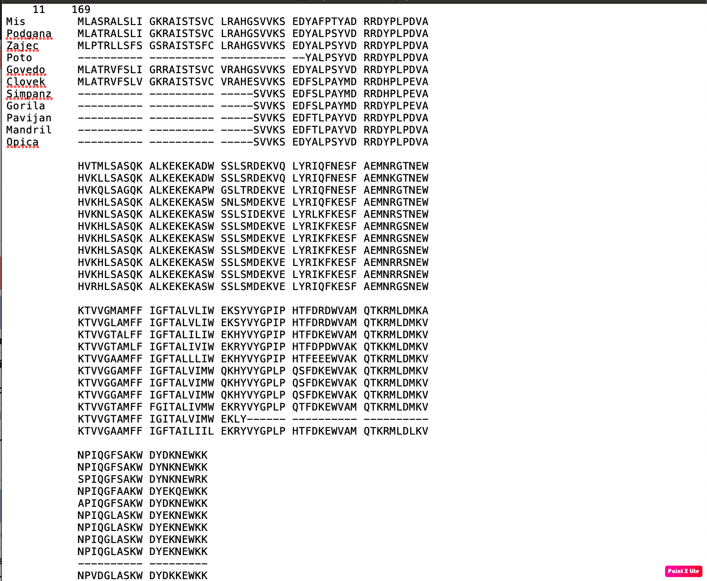
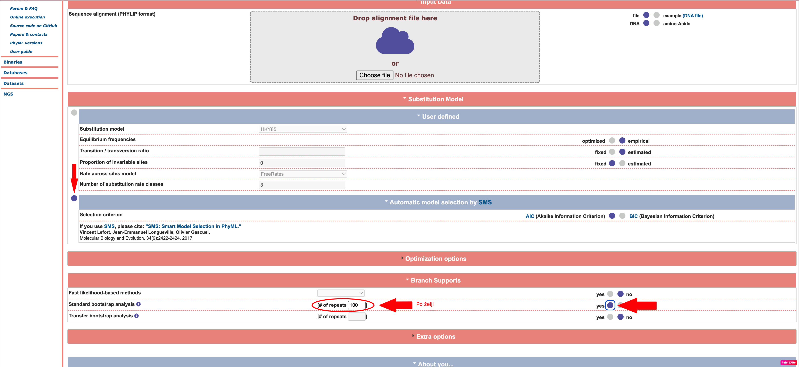
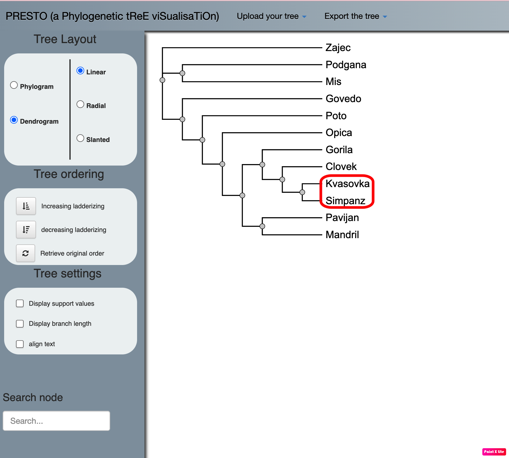

PhyML-filogenetska drevesa#
Avtorja: Maja Deutsch, Sara Jerič
Datum predstavitve: 2022-05-13
Namen vaje#
Na tej vaji bomo narisali filogenetsko drevo, ki bo temeljilo na principu največje verjetnosti.
Program#
Program: PhyML 3.0
Avtorji programa: Guindon S., Dufayard J.F., Lefort V., Anisimova M., Hordijk W., Gascuel O., Institut Français de Bioinformatique in France Génomique
Reference:
Guindon, S.; Dufayard, J.; et al. (2010) New Algorithms and Methods to Estimate Maximum-Likelihood Phylogenies: Assessing the Performance of PhyML 3.0 Systematic Biology. 52(5),696-704. [10.1093/sysbio/syq010] (https://doi.org/10.1093/sysbio/syq010)
Manalastas-Cantos, K.; Konarev, P.V.; Hajizadeh, N.R.; Kikhney, A.G.; Petoukhov, M.V.; Molodenskiy, D.S.; Panjkovich, A.; Mertens, H.D.T.; Gruzinov, A.; Borges, C.; et al. (2021) ATSAS 3.0: Expanded Functionality and New Tools for Small-Angle Scattering Data Analysis. Journal of Applied Crystallograpy 54, 343–355. 10.1107/S1600576720013412
Opis programa#
PhyML je program (software package), ki je primarno namenjen za oceno največje verjetnosti filogenije iz poravnav zaporedij. Ta zaporedja so lahko aminokislinska ali nukleotidna. Največja prednost PhyML je veliko število nadomestnih modelov, ki so povezani z različnimi možnostmi za iskanje topologij filogenetskega drevesa. PhyML deluje hitro do počasi, vendar je zelo natančen. PhyML s pomočjo testa razmerij na osnovi največje verjetnosti poišče najbolj podobne organizme in na podlagi tega izriše filogenetsko drevo.
PhyML 3.0 (najnovejša verzija) izvrši nov iskalni algoritem SPR (Subtree-Pruning-Regrafting), ki se zanaša na filter, kateri temelji na varčnosti namesto na razdalji. Ločimo dva algoritma: Multiple_Spr_Cycles in One_Spr_Cycle. Slednji obravnava vsako poddrevo v trenutni filogeniji. Vrednost varčevanja je ocenjena za vsako poddrevo pri vsakem razcepu. Ko dobi vse vrednosti varčevanja, jih razvrsti. Verjetnost za najbolj varčne rešitve so ocenjene s pomočjo uporabe dvostopenjskega pristopa. Na prvi stopnji se oceni verjetnost drevesa po dodatku varčnega SPR koraka brez prilagajanja dolžine vej. Če je dobljena verjetnost večja od do sedaj največje pridobljene verjetnosti, postane novo dobljena verjetnost najboljša. Če dobljena verjetnost ne postane najboljša, pa se ob razcepu tri dolžine vej optimizirajo tako, da povečajo verjetnost. Tukaj je potrebno upoštevati, da so to približne ocene, ki temeljijo na posodobitvi verjetnosti omejenega števila poddreves in ne celotne podatkovne strukture. Ko so vsi SPR koraki ocenjeni, se uporabi največja pridobljena ocenjena verjetnost in celotna podatkovna struktura se popolnoma posodobi. Multiple_Spr_Cycles v prvem koraku obravnava poddrevesa skozi One_Spr_Cycle, nato pa prilagodi parametre nadomestnega modela. Sledi prilagoditev vseh dolžin vej z uporabo metode optimizacije. Zadnji korak je posodobitev celotne podatkovne zbirke. Ti koraki se ponavljajo, dokler se verjetnost ne izboljša.
Vhodni podatki#
Vhodni podatki so aminokislinska oz. nukleotidna zaporedja v formatu Phylip. 
Navodila#
Vhodni podatki#
Ker je pretvorba podatkov iz fasta v Phylip format časovno preobsežna za današnjo vajo, so potrebni preoblikovani podatki že podani:
Citokrom_c#
11 169
Mis MLASRALSLI GKRAISTSVC LRAHGSVVKS EDYAFPTYAD RRDYPLPDVA
Podgana MLATRALSLI GKRAISTSVC LRAHGSVVKS EDYALPSYVD RRDYPLPDVA
Zajec MLPTRLLSFS GSRAISTSFC LRAHGSVVKS EDYALPSYVD RRDYPLPDVA
Poto ---------- ---------- ---------- --YALPSYVD RRDYPLPDVA
Govedo MLATRVFSLI GRRAISTSVC VRAHGSVVKS EDYALPSYVD RRDYPLPDVA
Clovek MLATRVFSLV GKRAISTSVC VRAHESVVKS EDFSLPAYMD RRDHPLPEVA
Simpanz ---------- ---------- -----SVVKS EDFSLPAYMD RRDHPLPEVA
Gorila ---------- ---------- -----SVVKS EDFSLPAYMD RRDYPLPEVA
Pavijan ---------- ---------- -----SVVKS EDFTLPAYVD RRDYPLPDVA
Mandril ---------- ---------- -----SVVKS EDFTLPAYVD RRDYPLPDVA
Opica ---------- ---------- -----SVVKS EDYALPSYVD RRDYPLPDVA
HVTMLSASQK ALKEKEKADW SSLSRDEKVQ LYRIQFNESF AEMNRGTNEW
HVKLLSASQK ALKEKEKADW SSLSRDEKVQ LYRIQFNESF AEMNKGTNEW
HVKQLSAGQK ALKEKEKAPW GSLTRDEKVE LYRIQFNESF AEMNRGTNEW
HVKHLSASQK ALKEKEKASW SNLSMDEKVE LYRIQFKESF AEMNRGTNEW
HVKNLSASQK ALKEKEKASW SSLSIDEKVE LYRLKFKESF AEMNRSTNEW
HVKHLSASQK ALKEKEKASW SSLSMDEKVE LYRIKFKESF AEMNRGSNEW
HVKHLSASQK ALKEKEKASW SSLSMDEKVE LYRIKFKESF AEMNRGSNEW
HVKHLSASQK ALKEKEKASW SSLSMDEKVE LYRIKFKESF AEMNRGSNEW
HVKHLSASQK ALKEKEKASW SSLSMDEKVE LYRIKFKESF AEMNRRSNEW
HVKHLSASQK ALKEKEKASW SSLSMDEKVE LYRIKFKESF AEMNRRSNEW
HVRHLSASQK ALKEKEKASW SSLSMDEKVE LYRIQFKESF AEMNRGSNEW
KTVVGMAMFF IGFTALVLIW EKSYVYGPIP HTFDRDWVAM QTKRMLDMKA
KTVVGLAMFF IGFTALVLIW EKSYVYGPIP HTFDRDWVAM QTKRMLDMKV
KTVVGTALFF IGFTALILIW EKHYVYGPIP HTFDKEWVAM QTKRMLDMKV
KTVVGTAMLF IGFTALIVIW EKRYVYGPIP HTFDPDWVAK QTKKMLDMKV
KTVVGAAMFF IGFTALLLIW EKHYVYGPIP HTFEEEWVAK QTKRMLDMKV
KTVVGGAMFF IGFTALVIMW QKHYVYGPLP QSFDKEWVAK QTKRMLDMKV
KTVVGGAMFF IGFTALVIMW QKHYVYGPLP QSFDKEWVAK QTKRMLDMKV
KTVVGGAMFF IGFTALVIMW QKHYVYGPLP QSFDKEWVAK QTKRMLDMKV
KTVVGTAMFF FGITALIVMW EKRYVYGPLP QTFDKEWVAM QTKRMLDMKV
KTVVGTAMFF IGITALVIMW EKLY------ ---------- ----------
KTVVGAAMFF IGFTAILIIL EKRYVYGPLP HTFDKEWVAM QTKRMLDLKV
NPIQGFSAKW DYDKNEWKK
NPIQGFSAKW DYNKNEWKK
SPIQGFSAKW DYNKNEWRK
NPIQGFAAKW DYEKQEWKK
APIQGFSAKW DYDKNEWKK
NPIQGLASKW DYEKNEWKK
NPIQGLASKW DYEKNEWKK
NPIQGLASKW DYEKNEWKK
NPIQGLASKW DYEKNEWKK
---------- ---------
NPVDGLASKW DYDKKEWKK
Outgroup#
12 170
Clovek MLATRVFSLV GKRAISTSVC VRAHESVVKS EDFSLPAYMD RRDHPLPEVA
Simpanz ---------- ---------- -----SVVKS EDFSLPAYMD RRDHPLPEVA
Gorila ---------- ---------- -----SVVKS EDFSLPAYMD RRDYPLPEVA
Pavijan ---------- ---------- -----SVVKS EDFTLPAYVD RRDYPLPDVA
Mandril ---------- ---------- -----SVVKS EDFTLPAYVD RRDYPLPDVA
Opica ---------- ---------- -----SVVKS EDYALPSYVD RRDYPLPDVA
Mis MLASRALSLI GKRAISTSVC LRAHGSVVKS EDYAFPTYAD RRDYPLPDVA
Podgana MLATRALSLI GKRAISTSVC LRAHGSVVKS EDYALPSYVD RRDYPLPDVA
Zajec MLPTRLLSFS GSRAISTSFC LRAHGSVVKS EDYALPSYVD RRDYPLPDVA
Govedo MLATRVFSLI GRRAISTSVC VRAHGSVVKS EDYALPSYVD RRDYPLPDVA
Poto ---------- ---------- ---------- --YALPSYVD RRDYPLPDVA
Kvasovka ---------- -----MLSLR QSIRFFKPAT RTLCSSRYLL QQKPVVKTAQ
HVKHLSASQK ALKEKEKASW SSLSMDEKVE LYRIKFKESF AEMNRGSNE-
HVKHLSASQK ALKEKEKASW SSLSMDEKVE LYRIKFKESF AEMNRGSNE-
HVKHLSASQK ALKEKEKASW SSLSMDEKVE LYRIKFKESF AEMNRGSNE-
HVKHLSASQK ALKEKEKASW SSLSMDEKVE LYRIKFKESF AEMNRRSNE-
HVKHLSASQK ALKEKEKASW SSLSMDEKVE LYRIKFKESF AEMNRRSNE-
HVRHLSASQK ALKEKEKASW SSLSMDEKVE LYRIQFKESF AEMNRGSNE-
HVTMLSASQK ALKEKEKADW SSLSRDEKVQ LYRIQFNESF AEMNRGTNE-
HVKLLSASQK ALKEKEKADW SSLSRDEKVQ LYRIQFNESF AEMNKGTNE-
HVKQLSAGQK ALKEKEKAPW GSLTRDEKVE LYRIQFNESF AEMNRGTNE-
HVKNLSASQK ALKEKEKASW SSLSIDEKVE LYRLKFKESF AEMNRSTNE-
HVKHLSASQK ALKEKEKASW SNLSMDEKVE LYRIQFKESF AEMNRGTNE-
NLAEVNGPET LIGPGAKEGT VPTDLDQETG LARLELLGKL EGIDVFDTKP
WKTVVGGAMF FIGFTALVIM WQKHYVYGPL PQSFDKEWVA KQTKRMLDMK
WKTVVGGAMF FIGFTALVIM WQKHYVYGPL PQSFDKEWVA KQTKRMLDMK
WKTVVGGAMF FIGFTALVIM WQKHYVYGPL PQSFDKEWVA KQTKRMLDMK
WKTVVGTAMF FFGITALIVM WEKRYVYGPL PQTFDKEWVA MQTKRMLDMK
WKTVVGTAMF FIGITALVIM WEKLY----- ---------- ----------
WKTVVGAAMF FIGFTAILII LEKRYVYGPL PHTFDKEWVA MQTKRMLDLK
WKTVVGMAMF FIGFTALVLI WEKSYVYGPI PHTFDRDWVA MQTKRMLDMK
WKTVVGLAMF FIGFTALVLI WEKSYVYGPI PHTFDRDWVA MQTKRMLDMK
WKTVVGTALF FIGFTALILI WEKHYVYGPI PHTFDKEWVA MQTKRMLDMK
WKTVVGAAMF FIGFTALLLI WEKHYVYGPI PHTFEEEWVA KQTKRMLDMK
WKTVVGTAML FIGFTALIVI WEKRYVYGPI PHTFDPDWVA KQTKKMLDMK
LDSSRKGTMK DPIIIESYDD YRYVGCTGSP AGSHTIMWLK PTVNEVARCW
VNPIQGLASK WDYEKNEWKK
VNPIQGLASK WDYEKNEWKK
VNPIQGLASK WDYEKNEWKK
VNPIQGLASK WDYEKNEWKK
---------- ----------
VNPVDGLASK WDYDKKEWKK
ANPIQGFSAK WDYDKNEWKK
VNPIQGFSAK WDYNKNEWKK
VSPIQGFSAK WDYNKNEWRK
VAPIQGFSAK WDYDKNEWKK
VNPIQGFAAK WDYEKQEWKK
ECGSVYKLNP VGVPNDDHHH
Postopek dela#
V okviru vaje bomo pregledali delovanje programa PhyML:
Našo datoteko v pravilnem formatu vstavimo v program in izberemo, kakšen tip zaporedja imamo v datoteki, za nas je to aminokislinsko zaporedje.

Kliknemo na substitution model in izberemo avtomatično izbiro modela (automatic model selection), ki s pomočjo AIC oz. BIC (kriterija za oceno optimalnosti modela) avtomatizira izbiro najbolj primernega modela za risanje izbranega filogenetskega drevesa.
Izbrati moramo tudi standard bootstrap analysis (tehnika za ocenjevanje točnosti), kar storimo v razdelku branch support in določimo, koliko ponovitev naj naredi. 
Zaženemo program (Run analysis).
Na zaslonu se nam prikaže potrdilo o oddani datoteki, status njene obdelave pa si lahko ogledamo na linku.
Ko se rezultati naložijo, sprva vidimo, kateri model si je izbral program in njegove parametre, če pa želimo videti naše drevo, moramo izbrati Tree Visualisation (vidimo online). Vse parametre in način risanja drevesa si lahko ogledamo, če si naložimo zip datoteko (Download).

Pričakovani rezultati in razlaga#
Program deluje dobro, ko vsebuje zaporedja organizmov, ki so si dovolj sorodna - tako dobimo prikaz filogenetskega drevesa, ki deluje smiseln in na katerem so vidni dolžina posameznih vej, ki ponazarja genetsko spremembo kot tudi “support values”, ki pove kolikokrat od 100ih primerov se ponovi ista veja drevesa, ko naredimo filogenetsko rekonstrukcijo (zato smo tudi predhodno opravili bootstrap analizo).

Ko se nam izriše filogenetsko drevo, ga lahko poljubno urejamo, da dobimo željen izgled. Spreminjamo lahko obliko drevesa, urejamo vrstni red vej, izbiramo katere vrednosti želimo imeti prikazane ter tudi iščemo podatke iz drevesa preko vozlišč. Ko dobimo željen prikaz drevesa, ga seveda lahko shranimo na računalnik. V primeru, da drevesa nočemo dobiti preko PhyML, ampak preko drugega programa, vseeno pa bi njegov prikaz urejali v PhyML, lahko svoje že narejeno drevo naložite in ga nato poljubno urejate.

Če imamo organizem, ki se evolucijsko bolj razlikuje od ostalih (t.i. outgroup organism/sequence) pa pride do napake, saj sam program ne zazna organizma kot oddaljenega. Z drugimi besedami PhyML prezre razliko med organizmi, ki so si evolucijsko bližje in tistimi, ki so bolj oddaljeni in sestavi drevo tako, da je le-to čim bolj monofiletično, pri čemer pride do velikih odstopanj. 